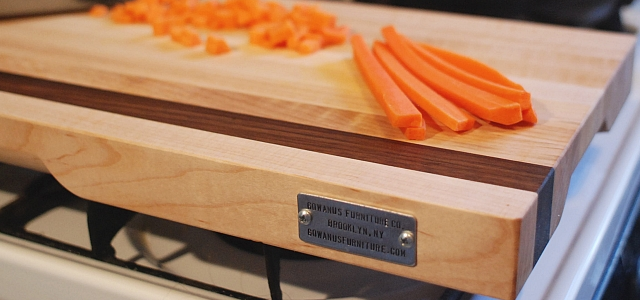
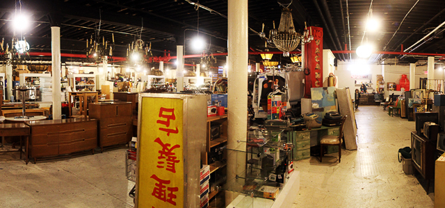
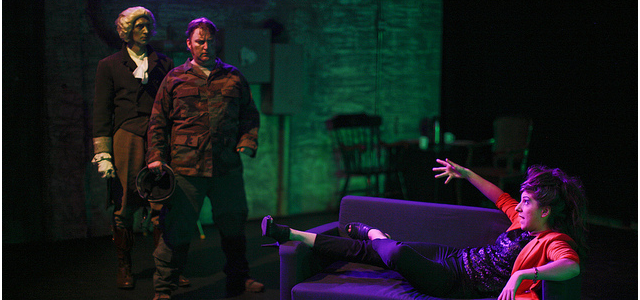
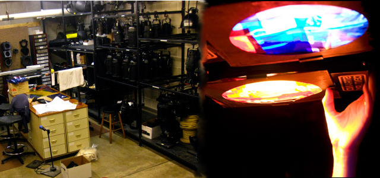

Christopher A. Petrinovic

Theater Technician, Lighting Designer, Carpenter, Freelancer.
Address: 176 8th Ave, Brooklyn, N.Y. 11215
Cell: (347)-276-0645
- Work Experience
-
Gowanus Furniture:2012 - Present
- Gowanus Furniture is a small upstart furniture company founded and headed by Pete Raho. Since beginning work with them in winter of 2012 I’ve been tasked with a significant portion of the company’s production of fine wooden home goods and have had the privilege to be included in the design process and management of new product lines as well as additional independent projects the company is contracted to do. Some of the most important aspects of the job (aside from the actual hands on creative and building process) have been the management of time, equipment, and space
- Website: http://www.gowanusfurniture.com/
- 
Film Biz Recycling2011 - 2012
- Film Biz Recycling is a green non-profit company dedicating to reusing and repurposing the excessive waste produced by the film, theatre, and arts industry. For a year I served as their Shop Steward and was placed in charge of using whatever happened to come through the doors to solve spatial and storage problems and generally “make things work.” I often found myself doing spot repairs on furniture pieces that found their way to the prop shop or working on independent ad upcycling products that the company encourages its staff to produce. Lastly I also worked closely with artists and individuals who would use the shop space for small performance events serving as on site support if there was an issue that needed troubleshooting.
- Website: http://www.filmbizrecycling.org/
- 
Freelance Theater2011 - Present
- Since moving back to New York City in 2011 I’ve accepted any independant theatre work that’s come my way. In the past two years I’ve held the position of stage manager, technical director, lighting electrician, set carpenter, board op, and everything in between and as I posses a wide and diverse skill set I often find myself filling multiple jobs on any given production. I’m always thrilled by theatre work as it tends to provide me with the most interesting challenges as each new artistic endeavor is intrinsically unique.
- 
Hamline University Theatre (light shop) 2007 - 2009
- For the duration of my two year college career I was lucky enough to be a part of the H.U.T. light shop where I received most of my experience with professional grade lighting equipment and had my first theatrical design experiences. The theatre, which was run as a repertory theatre with student staff, emulated a superbly realistic working environment with focus on on intershop collaboration and equipment training and maintenance.
- Website: http://hamlineuniversitytheatre.wordpress.com/ & http://hamlineuniversitytheatre.zenfolio.com/
- 
- Education
-
The Berkeley Carroll High School, Brooklyn N.Y. Class of 2007
Hamline University, St. Paul M.N. Majors in Theatre & Philosophy (only 2 years completed 2007-09)
- Equipment Skill Set: (Lighting)
- Board Op (E.T.C. Emphasis, preset boards, memory consoles)
- Moving light fixtures
- Vector Works
- Hand plotting and drafting
- Hanging & focusing
- Theater lighting color theory
- Wiring & cannibalization of instruments
- Fly in & grid rigging
- "Homemade” gobos
- Projector setup & operation
- Genie lift
- Equipment Skill Set: (Set/Prop)
- Power drill
- Radial arm, table, & band saw
- Routing table
- Belt & palm sanders
- Drill press
- Soldering
- Nail gun
- Grinding wheel
- Painting, staining, upholstering
- Lathe, ring master
- Planer, jointer
- Download My Technical Resume here